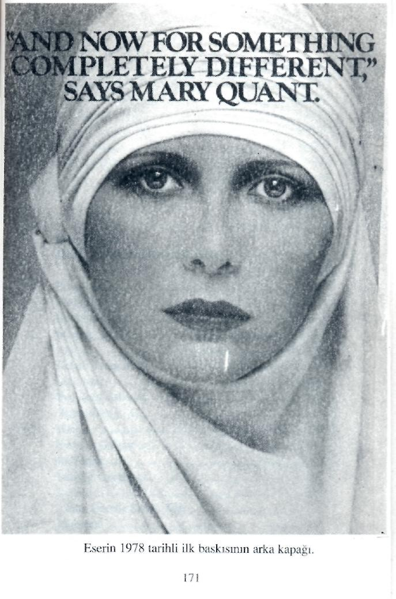

bir kadın, erkeğe de hürmet ve haşyet telkin eder ve cemiyet meydanında ve bütün iş sahalar-ında ideal kadını abideleştirir.
Eserdeki (tez)i bu türlü gerçekleştirici bir vesika takdim ederken, bunun laboratuvar kesinliği ile dâvamızı huccetlendirdiğini kaydederiz.
"Büyük Doğu Yayınları"
